Wake-up, Zoom, Sleep, Repeat

Hey I'm Robyn and I'll be walking you through my day! Feel free to search around for clickable objects to play and pause sounds. Hint: Click this textbox.
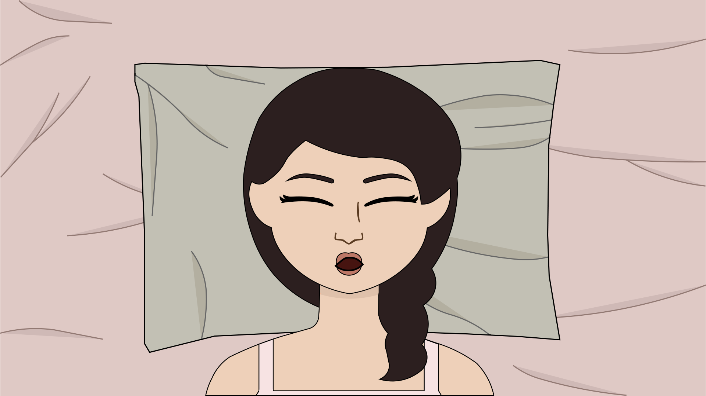
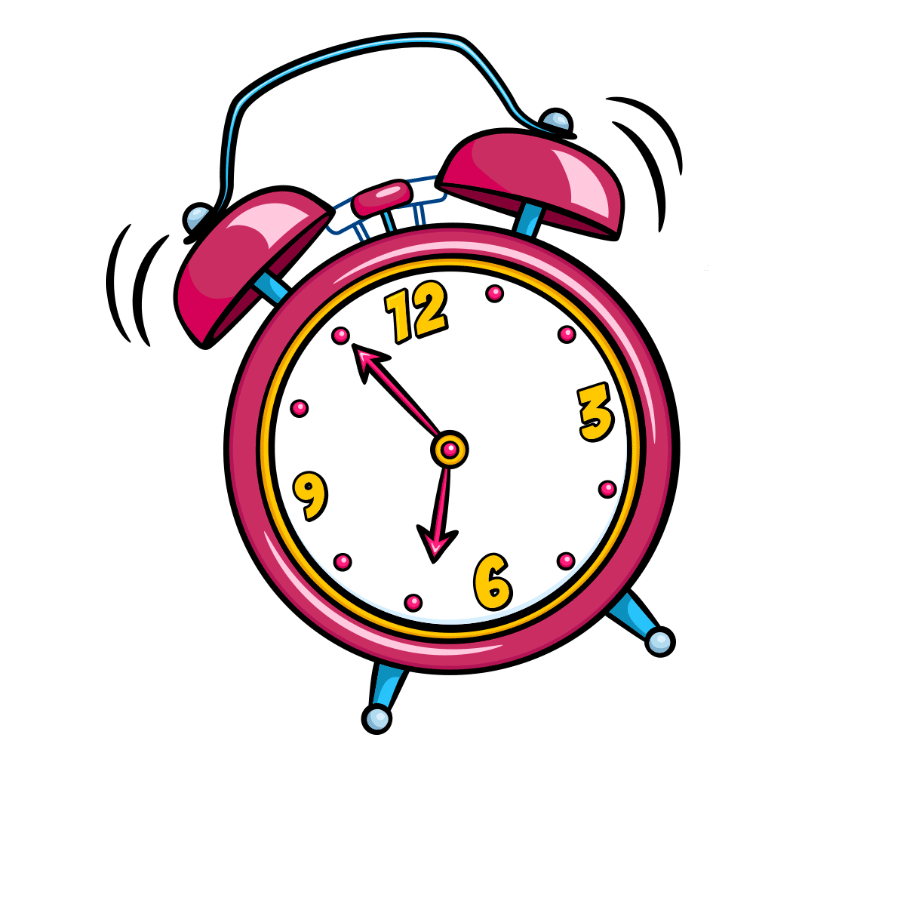
I always try to start my day early and set the tone for the rest of the day. Having a persistent alarm really helps!
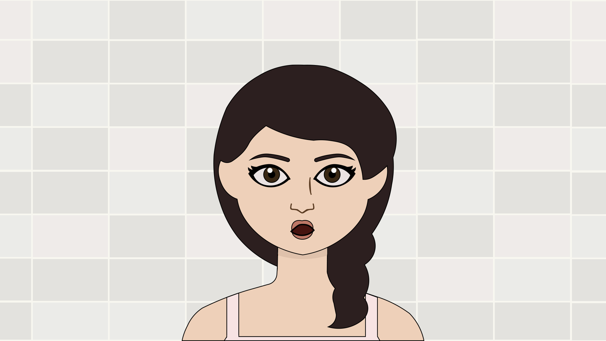
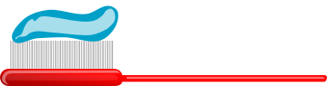
I go through my usual morning routine...sometimes it takes 5 minutes and sometimes 20. There's really no telling.
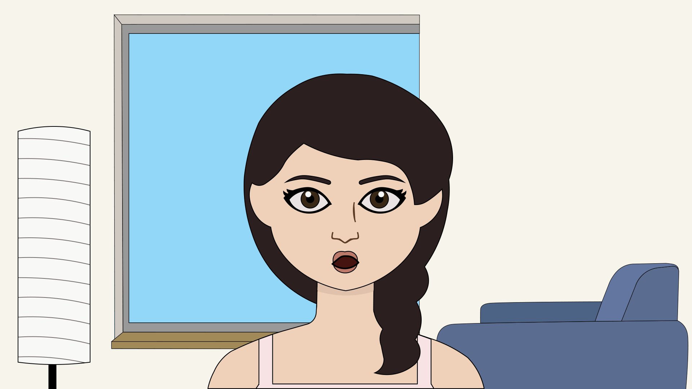
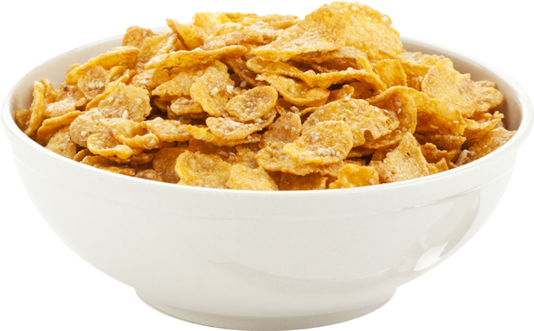
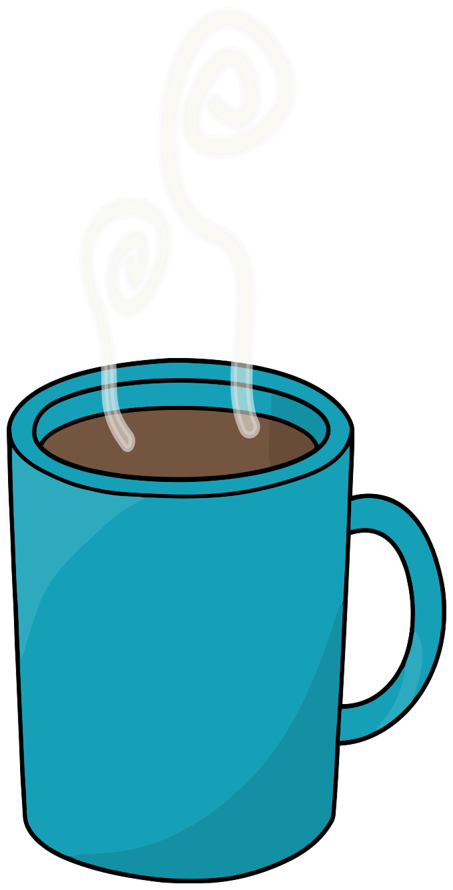
Coffee in the morning is my saving grace and I'm really into cereal right now! Is that a strange combination?
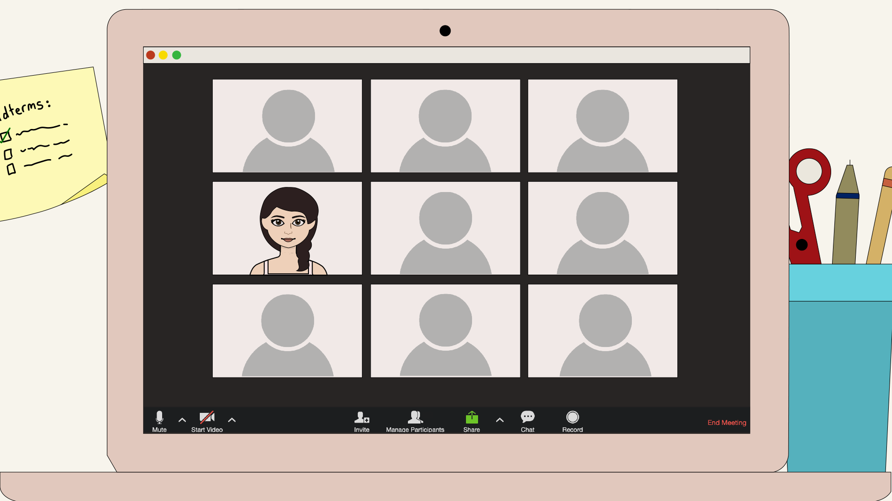
You think it would be easy to focus when it's your first class of the day but I'm really tempted to turn off my camera and take a power nap!
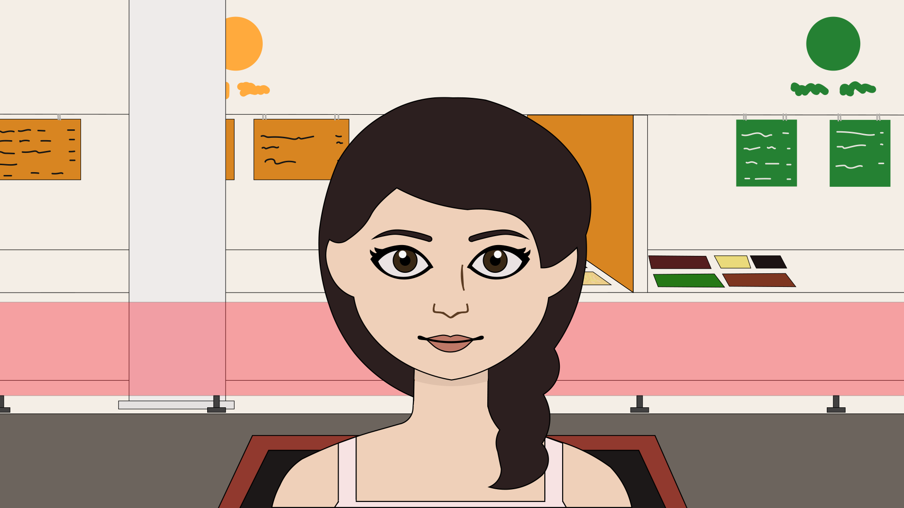
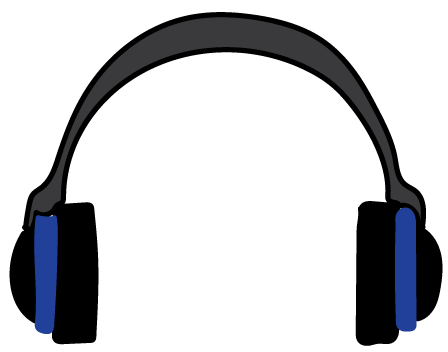
Food for the body and music for the soul is lunch time done right. Need to update my playlist though, it's starting to sound like cafeteria music.
Time to focus for class again! I'm sure I'm going to need to know all this for some future assignment
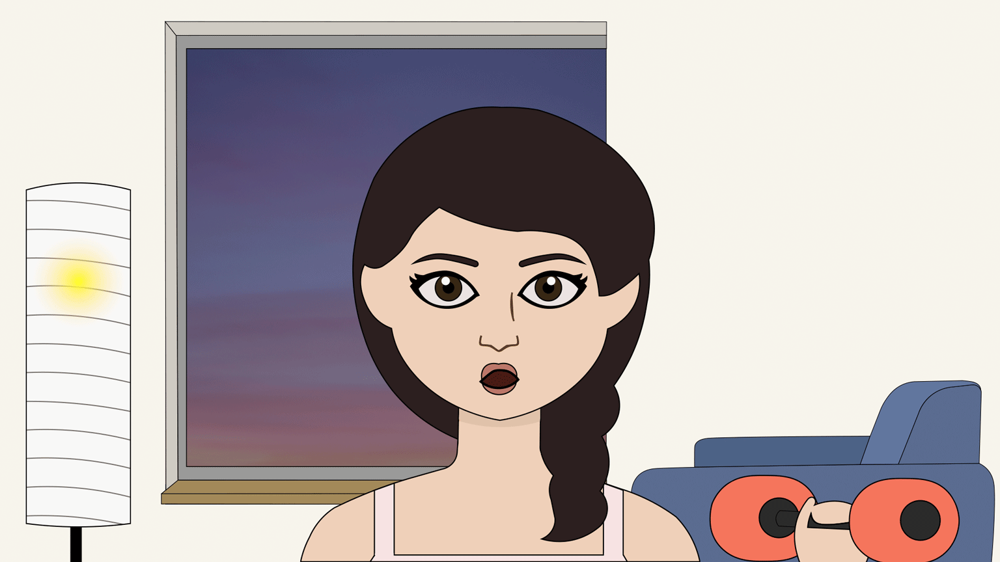
Exercising is never as easy as online instructors make it look...
And now it's time for some well earned carbs and a break from both work and procrastination. I do wish it was a little quieter though.
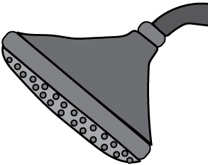
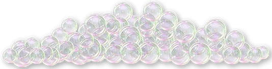
I love showering at night. It helps me to calm myself before sleeping and to fill my daily quota of day dreaming.
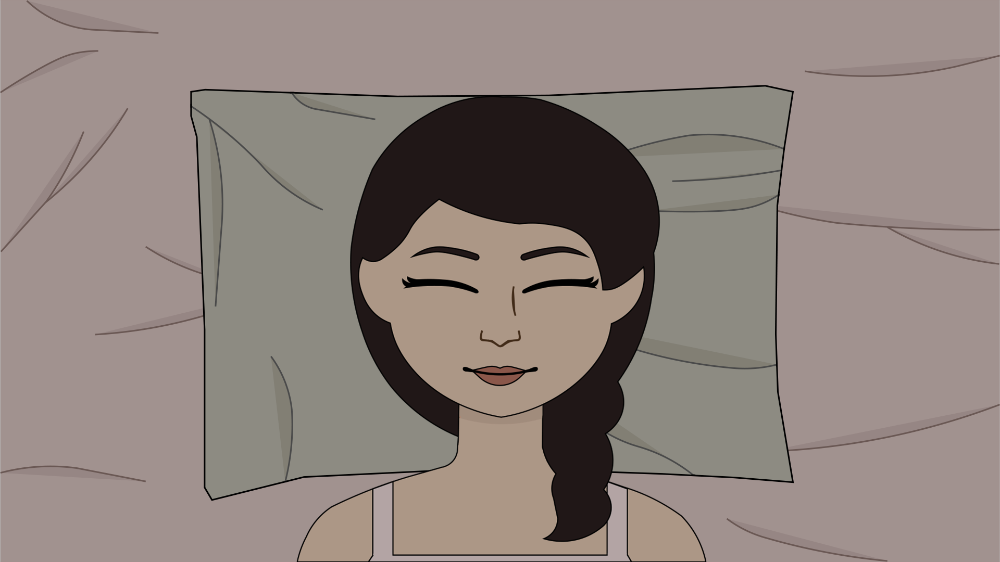
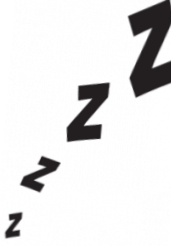
Well it's too late to do anymore work so I'll just do the rest tomorrow...if there's time. Goodnight!